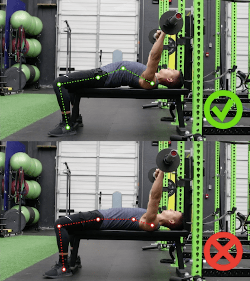

Setting up
With the basic understanding of the bench press under our belts, let's talk about how to properly set up.
- First and foremost, lay back on the bench with your eyes or forehead under the bar. Make yourself comfortable and rid yourself of any anxiety and/or self-doubt.
- Secondly, think about what we talked about before with the kinetic chain. Now I want you to plant your feet in a spot that feels comfortable for you. Not too far out or in, mind you. But keep those feet planted the whole time!
- Then I want you to arch your back a little. (There's no need for an extreme arch, especially when you're just starting out or learning proper technique!)
- After that, I want you to squeeze your shoulderblades together and make sure your back has a good base to lay on. Keep yourself tight and locked in here!
- Next up, we're going to grab and grip that bar hard!
Okay, but where should you grip? Generally for people with shorter arms, you will grip in closer and vice versa for longer arms.
An easy way to trouble shoot this for yourself is to practice with a bar with no weight on it. What I personally like to do is grab the bar and slight pullmyself up to it to where my forearms are making a 90 degree angle with the floor. - Now that you're ready to begin pressing, double check your tightness once again! Feet planted, back arched, shoulderblades pulled together!
- Unrack the bar with your elbows (you don't want to lose tightness in your back and shoulders here), if you're tight the bar should only need to come up a centimeter or two to clear the rack.
- Slowly bring the bar forward over your body in a controlled manner.
- While remaining in control, slowly descend the bar down to your torso.
- During the descent, think about how you're gripping the bar. You want to think about bending that bar into a U-shape. This will help with your arm pathing.
You want your elbows to come in a bit so that your chest and shoulders aren't doing all of the work here. We don't want to injure a shoulder!
As the bar comes near your torso, you will want it to touch somewhere between sternum to nipple level and your forearms at a 90 degree angle with the floor.
Touch the bar slowly to your chest and don't let it bounce off! Stay in control and prepare to ascend! - Now for the "big pay off"! Push the bar straight up and back over your head following a natural bar path. This can be subjective, but listen to your body. Don't overextend your shoulders.